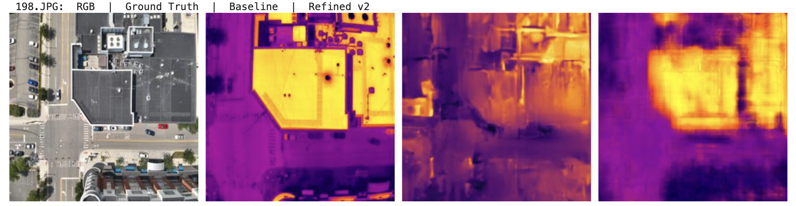

Hackathon WinnerComputer vision, multimodal systems, and AI products built for the real world.
Galgallo Waqo
I build computer vision systems, agentic AI products, and full-stack software for security intelligence, sustainability, and real-world decision support.
Galesburg, IllinoisKnox College - CS and Data ScienceGPA: 3.83 / 4.0Focused on AI/ML + SWE
Latest Wins
Auto-rotating highlights every 5 seconds.

April 2026
AI for Heat Resilience Hackathon
Placed 2nd and earned a $2,000 award for a thermal-imagery workflow built from RGB drone data.
Created an agentic sustainability platform that turns map imagery and environmental data into thermal evidence, hotspot ranking, and planning recommendations.
Fine-tuned the pre-existing ThermalGen model for urban scenes with U-Net architecture changes
Built the RGB-to-thermal preprocessing pipeline and standardized it for Google Maps satellite imagery
Implemented FastAPI inference hooks so ThermalGen could act as a callable tool inside the agent pipeline
2nd Place, AI for Heat Resilience Hackathon | Early Apr 2026
Experimental ML
Built a thermal-imagery prediction workflow that estimates urban heat patterns from RGB drone captures, making heat-risk analysis cheaper and easier to scale.
Experimented across ThermalGen baselines and hybrid directions to improve urban-scene performance
Aligned RGB drone frames with thermal imagery for cleaner supervised training
Tested encoder-decoder changes to better capture object-level heat structure
Built an AI-powered system that converts raw surveillance video into searchable intelligence using computer vision, vector search, and multimodal reasoning.
Used YOLO11-L, CLIP embeddings, and multimodal captioning for searchable video understanding
Combined vector retrieval with Gemini-powered summaries and chat-style querying
Designed the system for long-footage analysis and cross-video behavioral memory
Older work is still here if you want the fuller timeline.
Macro Image Data Management Platform
Full-Stack and DevOps Team Project | Mar 2025 - Jun 2025
Team-built platform for scientific image data management across private network directories, with secure access, metadata syncing, deep filtering, and containerized deployment.
I led backend and infrastructure efforts: secured Flask API with role-based auth, refactored into MVC, designed JSON metadata sync workflows, handled Docker Compose multi-container issues, and wrote deployment/testing documentation.
Comparative Analysis of Supercomputer Network Topologies
Sep 2024 - Dec 2024
Conducted network theory research with Erdos-Renyi models to study how random shortcuts and connectivity influence network diameter and traversal efficiency.
Implemented custom optimization strategies linking high-degree and low-degree vertices and found Erdos-Renyi ring structures offer strong scalability for distributed systems.
Network Theory | Algorithm Design | Debugging | Distributed Systems
AI/ML and software engineer with experience building computer vision systems, agent workflows, and production-style web applications. I work across Python, PyTorch, FastAPI, React, and cloud tooling to turn models into usable products.
Lately I have been leaning further into AI/ML + SWE, especially multimodal systems, environmental intelligence, model fine-tuning, and full-stack tools that make machine learning useful in the real world.
Education
Knox College, Galesburg, IL
Bachelor of Science, Computer Science and Data Science | Expected June 2027
GPA: 3.83 / 4.0
Coursework emphasis: Artificial Intelligence, Machine Learning, Data Structures and Algorithms, Mathematical Foundations for Computing, Probability and Statistical Modeling, Software Engineering, and systems-oriented project work.
Experience
Click a role to expand details.
Built Java Spring Boot microservices: notification system for mobile and online banking flows serving 1,000,000+ users.
Integrated APIs with Credit Reference Bureau systems, reducing eligibility checks from 2 days to under 2 minutes.
Implemented and documented service endpoints used for payment and eligibility workflows.
Supported deployment-readiness checks and API validation with engineering teams.
Learned core banking workflow design and fintech service delivery.
Maintain, optimize, and secure websites to keep performance stable.
Manage plugin updates and backup systems for reliable operations.
Update blog content for clarity and consistency.
Support SEO and competitor analysis to improve visibility.
Troubleshoot site issues and monitor reliability to reduce service disruption.
Managed growth across Instagram, Facebook, X, and LinkedIn.
Reached 94,000+ accounts and generated 3.4M+ impressions.
Produced 1,200+ posts and 200,000+ video views.
Used Canva and CapCut for campaign media design and production.
Designed recurring content workflows for consistent engagement performance.
Skills
Technical stack across AI/ML, software engineering, and deployment.